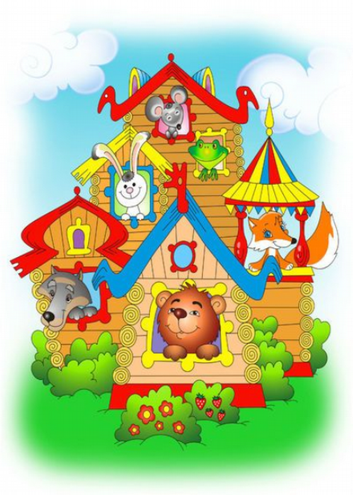

Уважаемый читатель!
Давно ли вы услышали первую сказку? Конечно, ещё задолго до того, как пошли в школу. Знакомые с детства сказки с наслаждением читаются и в зрелом возрасте. На протяжении всей своей истории народы слагают сказки, песни, легенды, присказки, поговорки.
На материале народных сказок писатели разных стран тоже стали сочинять сказки. Сказки, помещённые в Теремке сказок, помогут вам ближе познакомиться с богатыми народными сокровищами и лучшими достижениями детской литературы.